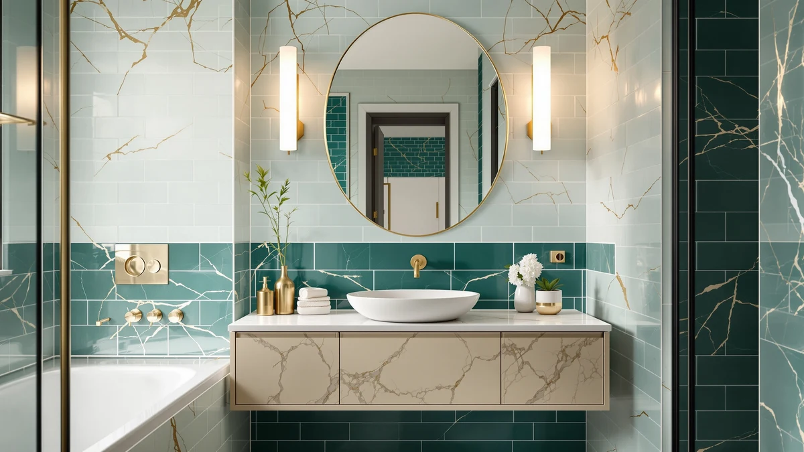

Things to Know Before You Buy
- Depth decides fit. Bathroom vanities run 18 to 21 inches deep, while base kitchen cabinets run 24 inches, which can steal walking room and block a door swing in a small bath.
- Vanities arrive wet-room ready. A vanity ships with a moisture-sealed top and a cutout for plumbing. A kitchen cabinet needs you to add a countertop and cut the back yourself.
- Kitchen cabinets flex on layout. They come in more widths, drawer counts, and door configurations, so a long double-sink run is easier to build from them.
- Humidity is the deciding stress test. Bathroom steam swells unsealed MDF and particleboard, so any kitchen cabinet in a bathroom needs sealed edges and a waterproof finish to last.
- Finished height differs. Vanities land at 32 to 36 inches complete, while a 34.5-inch kitchen base cabinet plus a counter can push the sink taller than you expect.
The bathroom vanity vs kitchen cabinets question shows up every time someone tries to save money by dropping standard kitchen cabinetry under a bathroom sink. Both cabinet types look almost identical on a showroom floor, and both hold a basin and store your daily clutter. What separates them is how they handle water, how deep they sit, and whether they arrive ready to plumb.
You can install either one under a bathroom faucet, but the two are built for different jobs. A bathroom vanity comes sized, sealed, and cut for a wet room. A kitchen cabinet hands you more storage layouts and often a lower price per foot, though it needs extra sealing and a separate countertop to survive years of steam. We break down where each one earns its place below, so you can match the cabinet to your bathroom instead of forcing the wrong one to fit.
Quick Answer
For most bathrooms, a purpose-built bathroom vanity wins because it arrives sized for the space and sealed against moisture, so you skip the retrofit work. Kitchen cabinets make sense when you want a custom storage layout, a longer run of drawers, or a lower price per foot, and you accept adding waterproofing plus a separate countertop. The bathroom vanity vs kitchen cabinets decision comes down to convenience versus flexibility, and your bathroom size usually settles it.
What is Bathroom Vanity?
A bathroom vanity is a cabinet designed from the ground up to hold a bathroom sink and hide the plumbing behind it. Manufacturers build it at 18 to 21 inches deep, narrower than kitchen cabinetry, so it fits the tighter footprint of a bath and leaves room to walk past. Most units ship as one finished piece, often with the countertop, basin, and backsplash already attached, and the back panel comes pre-cut for the drain and supply lines.
The material choices reflect the room. A good vanity uses a moisture-sealed top, a waterproof or heavily sealed finish on the box, and hardware rated to shrug off humidity. You will find widths from 18 inches for a powder room up to 72 inches for a double-sink layout, along with floating wall-mounted styles that free up floor space. That range is why the bathroom vanity vs kitchen cabinets comparison usually starts here: a vanity solves the sizing and sealing problem before you even open the box, which is exactly what a wet room asks for. The trade-off is less freedom to arrange drawers and doors the way you might in a kitchen.
What is Kitchen Cabinets?
Kitchen cabinets are modular boxes built to line a kitchen in continuous runs. Base units sit 24 inches deep and 34.5 inches tall before the countertop, a depth that gives you generous storage and matches standard kitchen appliances. You buy them as separate pieces, then combine widths and door or drawer fronts to build the exact layout a room needs. They arrive without a countertop, a sink cutout, or plumbing holes, because the installer adds those on site.
That modular nature is the strength people chase when they weigh kitchen cabinets against a vanity. You can build a long double-basin bathroom run, stack extra drawers for towels, or match cabinetry to a look you already have elsewhere in the house. The catch is the finish. Kitchen cabinets are engineered for a dry room, so the particleboard or MDF core and the joints often lack the moisture sealing a bathroom demands. Drop one under a bathroom sink without sealing the edges and adding a waterproof top, and steam works into the seams over a few seasons. Used with that prep, though, kitchen cabinets give you a storage layout a stock vanity cannot.
Head-to-Head: Build Quality & Durability
On raw construction, kitchen cabinets often win. Manufacturers build them for a room where you slam drawers and stack heavy cookware, so the boxes, glides, and hinges tend to carry stronger ratings than budget vanity hardware. If you buy plywood-box kitchen cabinets, you get a sturdier shell than the particleboard core of many entry-level vanities.
Durability in a bathroom is a different test, and here the comparison flips. In a bath, moisture is the threat, and weight barely matters. A vanity ships with sealed edges, a waterproof top, and a finish rated for humidity, so it resists the swelling and delamination that ruin cabinetry near a shower. A kitchen cabinet starts stronger but arrives unsealed, and exposed MDF or particleboard soaks up steam through any bare edge or drilled hole. You can close that gap by sealing every cut edge, painting the interior, and topping it with a solid surface, yet that work takes time and skill. Left unsealed, a kitchen cabinet can warp within a few humid seasons, while a sealed vanity holds its shape for a decade. Match the box strength you want to the sealing effort you are willing to put in.
Head-to-Head: Price & Value
Sticker price favors kitchen cabinets, but the total is closer than it looks. A stock kitchen base cabinet can cost less per linear foot than a comparable vanity box, so the first number you see looks like a win. Then you add a countertop, a sink, sealant, and either your labor or a contractor's to cut plumbing and waterproof the seams. Stack those up, and the bathroom vanity vs kitchen cabinets gap narrows fast, sometimes to nothing. A pre-built vanity like the Design House Concord bundles the top, basin, and sealing into one price, which is why it often wins on value for a straightforward single or double sink. Kitchen cabinets pull ahead on value only when you want a layout no stock vanity sells, or when you already own the cabinets and the countertop.
Head-to-Head: Use Experience
Day to day, the two feel different the moment you stand at the sink. A vanity sits at bathroom depth, so you lean in comfortably and your knees clear the base. Drop in a 24-inch kitchen cabinet, and that extra depth pushes the basin farther from you and eats floor space you notice every time you squeeze past to the shower. In a small bath, those few inches change how the whole room reads.
Installation shapes the experience too. A vanity usually means setting one piece, connecting the drain, and caulking the top, a job many homeowners finish in an afternoon. Kitchen cabinets ask more of you: level each box, join the runs, template and mount a countertop, then cut the back for plumbing. You gain control over the layout in exchange for that effort. Storage day to day is where kitchen cabinets pay you back, since you can spec drawer stacks and full-height doors that a stock vanity rarely offers. So the day-to-day split is clear: the vanity gives you a faster, roomier fit, while kitchen cabinets give you storage and layout you tailor yourself. If a quick install matters more than a bespoke arrangement, the vanity is the easier call.
When to Choose Bathroom Vanity
Choose a bathroom vanity when you want the job done with the least fuss. If your bathroom is small or standard-sized, a vanity fits the depth without crowding, and you skip the retrofit entirely. Pick it when you would rather set one sealed piece than level cabinets, template a countertop, and waterproof seams over a weekend. A vanity also suits anyone renting a place or flipping a home, where a clean, fast install matters more than a bespoke layout. For most people the vanity is the safe default, because it removes the two hardest parts, sizing and sealing, before you start. Buy a finished unit like the Design House Concord or a floating GLORAFIN, connect the plumbing, and you have a moisture-ready sink cabinet that will hold up for years.
When to Choose Kitchen Cabinets
Reach for kitchen cabinets when your bathroom is large and you want a storage layout no stock vanity sells. If you plan a long double-sink run, need stacked drawers for towels and supplies, or want cabinetry that matches a look elsewhere in the house, the modular boxes give you that freedom. They also make sense when you already own leftover cabinets from a kitchen project, since repurposing them can trim the budget. The catch is that kitchen cabinets only work in a bathroom if you commit to the prep: seal every cut edge, add a waterproof finish, cut the back for plumbing, and top it with a solid surface. Choose this route when you have the skills or the contractor to do that sealing right, and when the payoff of a custom layout outweighs the extra labor. Done well, it turns a big bathroom into a storage workhorse.
Our Top Picks
If the comparison points you toward a purpose-built vanity, these three cover the range most bathrooms need, from a value double-sink unit to a floating premium option. Each arrives sealed and sized for a wet room, so you get the vanity advantages without the kitchen-cabinet prep work.

Editor’s Pick
Design House Concord 72 Inch
A 72-inch double-sink vanity that arrives sealed and cut for plumbing, so you get a wet-room-ready cabinet without building a kitchen run.
$497.78
Check Price on Amazon
Best Value
ARIEL Hepburn 72-inch Bathroom Vanity
A 72-inch vanity with a moisture-resistant finish and a factory plumbing layout, a step up in style if a longer double-sink footprint fits your bath.
$1,689.00
Check Price on Amazon
Premium Choice
GLORAFIN 48" Floating Double Vanity
A 48-inch floating double vanity with a sealed top, wall-mounted to open the floor in a way base kitchen cabinets cannot.
$849.99
Check Price on AmazonFrequently Asked Questions
Can you use kitchen cabinets in a bathroom?
What is the difference between a bathroom vanity and kitchen cabinets?
Are kitchen cabinets cheaper than a bathroom vanity?
Are kitchen cabinets too deep for a bathroom?
Do bathroom vanities and kitchen cabinets sit at the same height?
Final Verdict
The bathroom vanity vs kitchen cabinets decision rewards the vanity for most people, since a sealed, correctly sized unit like the Design House Concord solves moisture and fit in one purchase and installs in an afternoon. Kitchen cabinets earn their spot in a large bathroom where you want a custom storage layout and you will do the sealing and countertop work to make them last. Match the choice to your room size and your appetite for prep, and either one can serve a bathroom well.